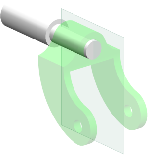
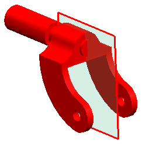
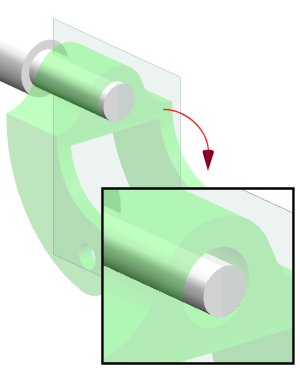

将 des04_caster_shaft 设为工作部件。

按下 Ctrl+E 并在表达式对话框中查看现有的表达式。
选择 boss_dia。
当前的 boss_dia 值为0.75。
点击创建部件间引用 。
在选择部件对话框中，点击 des04_caster_ipe。

点击确定。
在创建部件间引用对话框中，选择 theDia = 0.5。
点击确定。
查看表达式新的公式值。
这个公式引用了现存的表达式并从 des04_caster_ipe 继承值。
|
名称 |
boss_dia |
|
公式 |
“des04_caster_ipe”::theDia |
点击确定。
部件将更新以显示更小的凸台直径。
